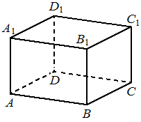

historical_editorial50
Предварительные разборы, внешнего эталона нет.
| В прямоугольном параллелепипеде известно, что , , . Найдите объём многогранника, вершинами которого являются точки , , , , , . |  |
{
"complete": true,
"included": true,
"exclusion_reasons": [],
"author_mode": "historical_shared_context",
"author_path": null,
"auditor_path": null,
"feedback_ref": null,
"source_run": "data/annotation/runs/2026-10-31-fipi-50x1"
}{
"task_id": "793F38",
"solution_status": "solved",
"answer": "60",
"steps": [
{
"id": "s1",
"action": "Распознать заданный многогранник как треугольную призму",
"result": "Треугольные основания ADA1 и BCB1 параллельны и совмещаются переносом на AB; рёбра переноса перпендикулярны плоскостям оснований.",
"kc_ids": [
"k1"
],
"input_refs": [
"condition"
]
},
{
"id": "s2",
"action": "Найти площадь треугольного основания",
"result": "AD=BC=5,AA1=4, угол DAA1 прямой. S(ADA1)=5·4/2=10.",
"kc_ids": [
"k2"
],
"input_refs": [
"condition",
"s1"
]
},
{
"id": "s3",
"action": "Вычислить объём призмы",
"result": "Высота AB=6, поэтому V=10·6=60.",
"kc_ids": [
"k3"
],
"input_refs": [
"s1",
"s2"
]
}
],
"kc_candidates": [
{
"id": "k1",
"name": "Распознавать призму по соответствующим граням",
"description": "Установить два параллельных равных многоугольных основания и направление соединяющих соответствующие вершины рёбер."
},
{
"id": "k2",
"name": "Находить площадь прямоугольного треугольника",
"description": "После установления прямого угла вычислить половину произведения катетов."
},
{
"id": "k3",
"name": "Вычислять объём призмы",
"description": "Умножить площадь основания на перпендикулярную высоту; наклонное ребро не подставлять вместо высоты."
}
],
"methods": [
{
"id": "m1",
"name": "Выбрать треугольные основания призмы",
"step_ids": [
"s1",
"s2",
"s3"
]
}
],
"warnings": []
}null
[
{
"task_id": "793F38",
"local_id": "k1",
"canonical_id": "literal_0cd75b4548b3",
"decision_basis": "identical_name_and_description_only",
"source_name": "Распознавать призму по соответствующим граням",
"source_description": "Установить два параллельных равных многоугольных основания и направление соединяющих соответствующие вершины рёбер.",
"evidence": [
{
"step_id": "s1",
"action": "Распознать заданный многогранник как треугольную призму",
"result": "Треугольные основания ADA1 и BCB1 параллельны и совмещаются переносом на AB; рёбра переноса перпендикулярны плоскостям оснований."
}
]
},
{
"task_id": "793F38",
"local_id": "k2",
"canonical_id": "right_triangle_area",
"decision_basis": "explicit_editorial_operation_group",
"source_name": "Находить площадь прямоугольного треугольника",
"source_description": "После установления прямого угла вычислить половину произведения катетов.",
"evidence": [
{
"step_id": "s2",
"action": "Найти площадь треугольного основания",
"result": "AD=BC=5,AA1=4, угол DAA1 прямой. S(ADA1)=5·4/2=10."
}
]
},
{
"task_id": "793F38",
"local_id": "k3",
"canonical_id": "literal_19971b364ca1",
"decision_basis": "identical_name_and_description_only",
"source_name": "Вычислять объём призмы",
"source_description": "Умножить площадь основания на перпендикулярную высоту; наклонное ребро не подставлять вместо высоты.",
"evidence": [
{
"step_id": "s3",
"action": "Вычислить объём призмы",
"result": "Высота AB=6, поэтому V=10·6=60."
}
]
}
]